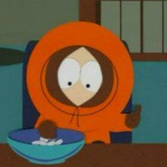
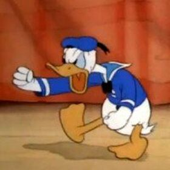
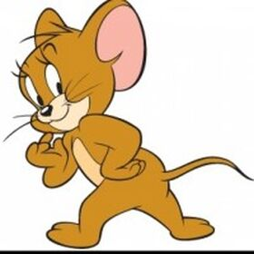
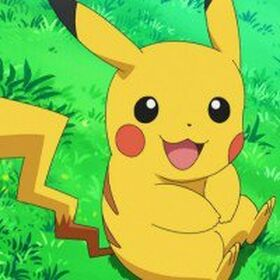

Кенни Mаккормик
Персонаж мультсеріалу South Park. Він один із п'яти головних героїв (разом з Стеном, Кайлом, Картманом та Баттерсом), учнів четвертого класу. Створений Треєм Паркером та Меттом Стоуном, вперше з'являється у коротких фільмах "Дух Різдва" у 1992 та 1995 роках.
Особливістю Кенні є те, що він майже щосерії протягом перших п'яти сезонів гине. Іншою віддмітною рисою
Кенні є його помаранчева куртка з каптуром, який вкриває більшу частину його обличчя, через що його мова
майже нерозбірлива. Його день народження - 22 березня.
Як і більшість персонажів "Південного Парку" персонаж Кенні базується на реальній особі; в його
випадку, це був друг дитинства Трея Паркера, якого також звали Кенні. В інтерв'ю 2000-го року Трей
сказав що сравжній Кенні був найбіднішою дитиною кварталу і носив оранжеву куртку з каптуром, який
заважав йому вільно говорити, і всім було важко зрозуміти, що він каже. Трей також казав, що справжній
Кенні час від часу зникав, що змушувало всіх задумуватись чи живий він взагалі.
До́нальд Фонтлерой Дак
Качур, позитивний герой мультфільмів студії Walt Disney. Дональд — білий антропоморфний качур з жовтими дзьобом і жовтими ногами, полюбляє веселитися та постійно потрапляє у якісь пригоди.
Дональд був створений Волтом Діснеєм, коли він прослуховував Кларенса Неша, який цитував «Mary had а
little lamb» своїм «качиним» голосом. Міккі Маус у той час вже став ключовою моделлю для дітей, і Дісней
хотів персонажа, який би мав декілька негативних характеристик, які вже не можна було додати Міккі.
Дональд вперше з'явився в мультику «Розумні курочки» 9 червня 1934 року (крім того він згадувався в
1931 році в книжці історій Діснея). Зовнішній вигляд Дональда в мультфільмі був створений аніматором
Діком Ланді, і був схожий з сучасним за виглядом, пір'я і колір дзьоба були тими ж, синя сорочка та
капелюх, але тіло було товщим, і ноги більшими.
Джеррі
Миша Джеррі, головний герой мультсеріалу про взаємини кота Тома і миші Джеррі.
Мультсеріал створювався голлівудською студією Metro-Goldwyn-Mayer з 1940 по 1958, до того моменту, поки
анімаційна студія не була закрита.
Як правило, ні Том, ні Джеррі не говорять. Але є рідкісні винятки, коли присутній повноцінний, хоча як
правило короткий діалог. В інших випадках озвучування персонажів зведено до криків болю. Також у серії
«Самотнє мишеня» (англ. The Lonesome Mouse) Том і Джеррі говорять усю другу половину епізоду (Джозеф
Барбера і Вільям Ганна виконали відповідні ролі). Виконувана ними міміка та жестикуляція чітко
відображає почуття і наміри персонажів. Більшість криків і інших голосових ефектів є криками самого
Вільяма Ганни, включаючи знаменитий крик Тома (для створення особливого ефекту початок і кінець крика
Ганни були вирізані і звучить лише найгучніша середня частина).
Пікачу
Персонаж творів під брендом «Покемон». Належить до покемонів першого покоління і має порядковий номер 025 зі 151 цього покоління і 729 усіх семи на 2016 рік. Його ім'я перекладається з японської як грозова миша, адже це подібний на гризуна покемон електричного типу. Вперше він з'являється у відеоіграх компанії Nintendo в 1996 році, а також в однойменному мультсеріалі. Завдяки аніме це найвідоміший і найпопулярніший з усіх покемонів.
Пікачу — це невеличкий осадкуватий мишоподібний покемон із коротким жовтим хутром, що має довгі вуха,
чорні на кінцях. На спині він має дві коричневі смуги і початок хвоста теж коричневий. Хвіст має форму
блискавки з прямим кінцем у самців та із серцеподібним у самиць. На щоках у Пікачу червоні кола, які
розташовані прямо над електричними мішками, які в свою чергу — за щоками. У них Пікачу накопичує
електроенергію, щоб потім використовувати, наприклад, для збивання блискавками плодів з дерев. При
накопиченні великої кількості електрики мішки починають іскрити. Якщо її не буде звільнено, то покемон
може захворіти. Якщо ж зібрати декілька Пікачу в одному місці, то вони можуть призвести до порушення
подачі електрики або розпочати грозу.
В цілому це веселий і кмітливий покемон, але він може бути недовірливим до свого власника. Принаймні
деякі Пікачу мають клаустрофобію, через яку цей покемон не може знаходитись у покеболі, що ускладнює
його утримання. Пікачу — це друга форма еволюції з Пічу, що може перетворитись на Райчу за допомогою
Грозового каменя еволюції. Зріст покемона приблизно 40 см, а вага десь 5,9 — 6 кг. Мешкають Пікачу в
лісах, але намагаються наближатися до людських осель. Володіють вразливістю до атак земляних покемонів.
Гомер Сімпсон
один із головних героїв мультсеріалу «Сімпсони». Гомер — грубий і неввічливий батько родини, він має очевидні вади: товстий, лисий і не дуже розумний. Нерідко він поводиться як блазень, абсурдно, егоїстично і нетактовно, але все ж лишається симпатичним.
Гомер має трьох дітей: Барта, Лісу і Меґґі. Працює на Спрингфілдській атомній електростанції
інспектором з безпеки. Гомер дуже лінивий і багато п'є. За декілька років він перетворився на культового
персонажа у США та багатьох інших країнах світу, в тому числі і в Україні.
Творець «Сімпсонів» Мет Ґрейнінґ вигадав Гомера у 1986 році разом з іншими членами його родини і
показав свої малюнки продюсеру Джеймсу Бруксу. Ідея Бруксу сподобалася. Перші серії-короткометражки на
«Шоу Трейсі Ульман» почали виходити з 19 квітня 1987 року. Перша серія за участю Гомера зветься «На
добраніч». Гомер — головний герой шоу, з'являється у кожному епізоді без винятку, де зазвичай відіграє у
епізоді значну роль.